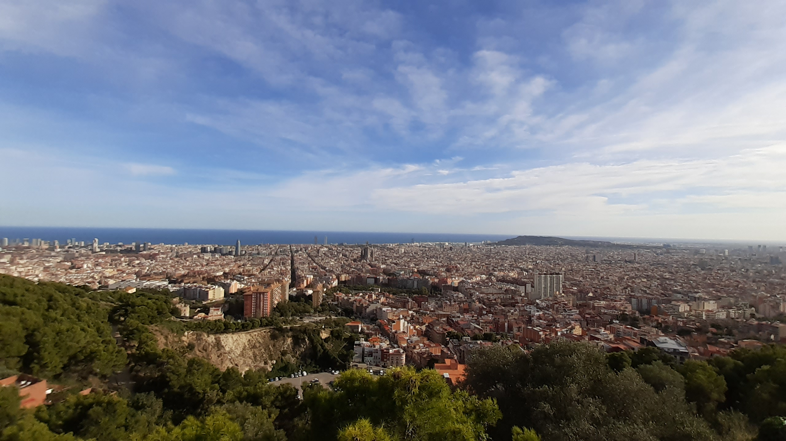

Galeria
-

-

-

- 
-

W Barcelonie byłem tylko 1 dzień, ale był to bardzo intensywny
dzień! Lądowałem wieczorem na lotnisku El Prat, następnie pociągiem
dojechałem co centrum Barcelony. Nocleg miałem w
dzielnicy gotyckiej. Jeszcze tego samego wieczoru poszedłem na
kolację do lokalnej restauracji gdzie zjadłem pyszne hiszpańskie
tapas pijąc przy tym najwspanialszy napój na swiecie -
Sangria. Ten wieczór nie mógł długo trwać ze względu na to, że następnego
dnia chciałem zobaczyć możliwie najwięcej.
Natępny dzień zaczął
się dość wcześnie od kawy i śniadania w pięknej dzielnicy gotyciej. Po
śniadaniu zacząłem zwiedzać.
W ciągu 12 godzin udzało mi się zobaczyć:
To był bardzo intensywny dzień, ale był też najpięknieszy! Niestety nie udało się zobaczyć więcej i odwiedzić więcej miejsc, ale wiem że kiedyś tam wrócę i nie na jeden dzień tylko na dłużej. Pokochałem to miasto i zawsze będzie dla mnie número uno na świecie!